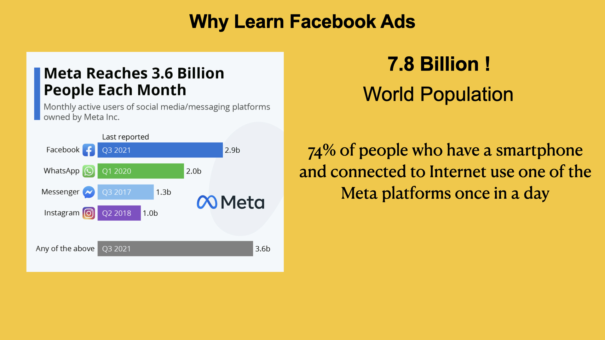

Why Learn Facebook ads
-
People Spend Hours Every Day on Their Phones
The average person spends 4 to 6 hours daily on their smartphone. Most of this time is spent scrolling through social media and messaging apps.
-
Meta Platforms Dominate Mobile Usage
Meta owns Facebook, Instagram, Messenger, and WhatsApp—all top apps in terms of time spent. Users switch between these apps all day: watching reels, checking messages, browsing feeds, etc. This gives multiple chances to show your ad throughout the day.
-
Your Audience Is Already There
Whether you're selling products, offering services, or growing a brand, your ideal customer is already on these apps. You don’t need to pull people in—they’re already looking.
-
Mobile Ads Work Better on Meta
Meta Ads are designed to perform well on mobile (where most users are). Instagram Stories, Reels Ads, and Facebook In-Feed Ads are built for mobile-first experiences.
-
Unmatched Targeting on Mobile
You can target users based on what they do on their phones: Which apps they use Pages they follow What they watch, click, or search Even if they visited your website from their phone
-
Low-Cost, High-Impact Ads
Because your ad can appear in multiple Meta apps, you get more impressions for less money. Meta automatically places ads across all apps for best performance.
-
Multi-App Retargeting
Someone saw your ad on Facebook but didn’t buy? Retarget them on Instagram. Or send them a message on Messenger. All this is possible through one platform—Meta Ads Manager.
-
Huge Career & Business Opportunity
Businesses want to reach people where they spend time—that’s on their phones. If you can master Facebook Ads, you’re offering a skill that’s in high demand.